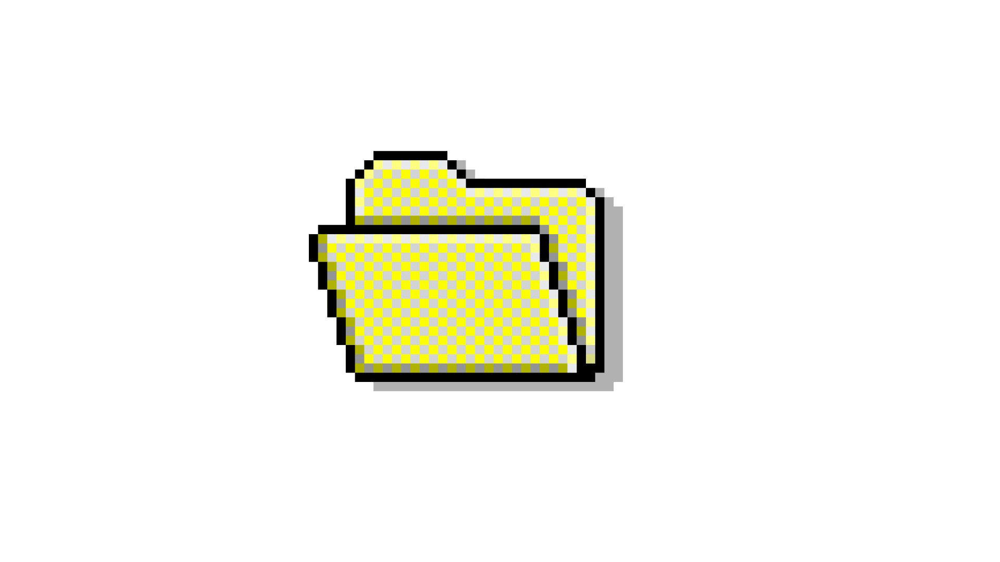
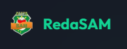
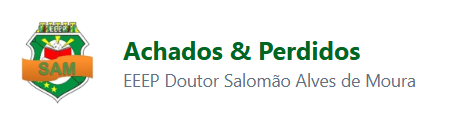
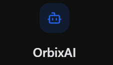
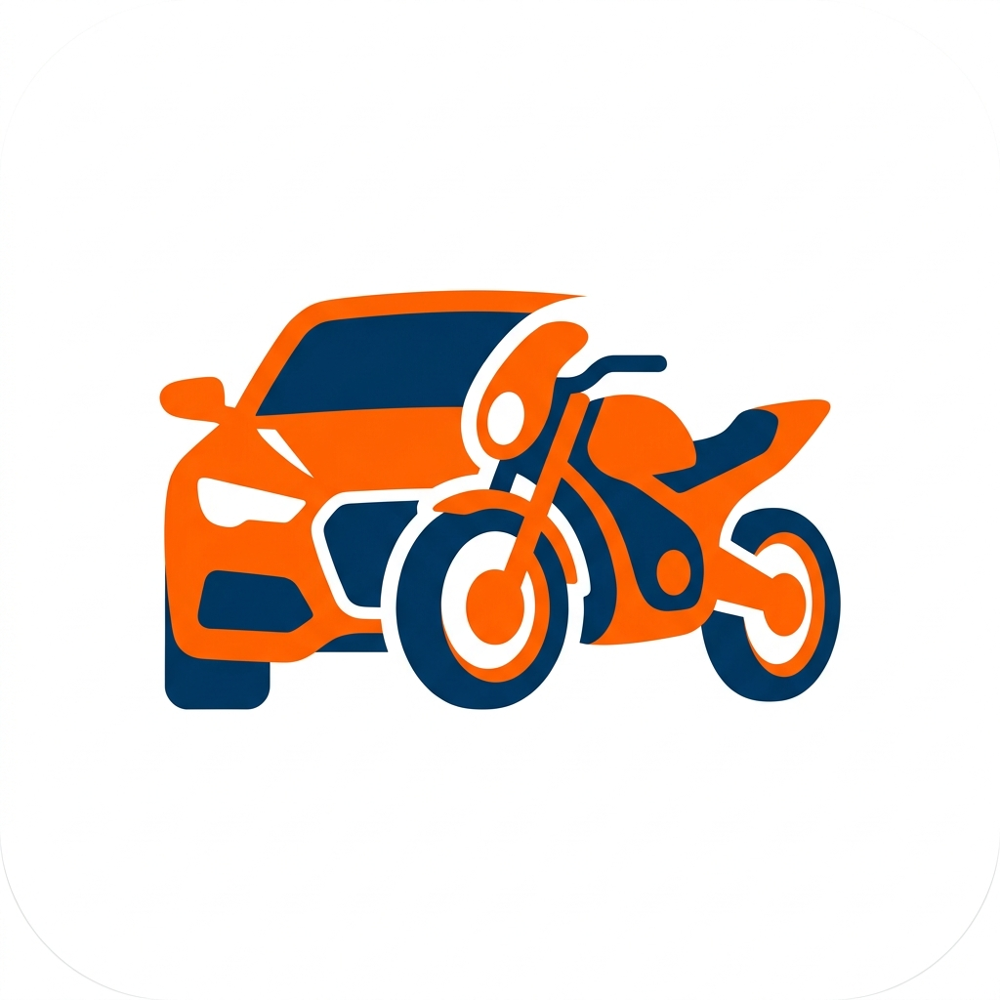
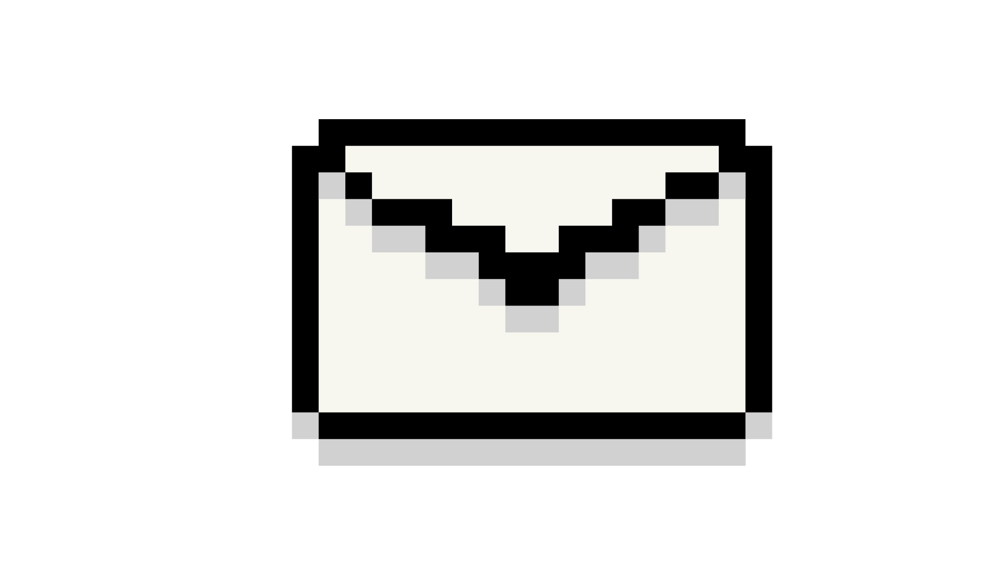

David Alonso Nogueira Silva
Back-end Developer
Me
Desenvolvedor de software com foco em back-end, dedicado à construção de sistemas robustos, escaláveis e orientados a boas práticas de engenharia. Ao longo da minha trajetória, venho ampliando meu domínio técnico também na área de DevOps, buscando constantemente atualização sobre automação de processos, integração e entrega contínua (CI/CD), containerização e gerenciamento de infraestrutura.
Sou Técnico em Desenvolvimento de Sistemas, formação obtida por meio de um curso técnico integrado ao Ensino Médio, realizado na Escola Estadual de Educação Profissional Salomão Alves de Moura (EEEP Salomão Alves de Moura), localizada no estado do Ceará. Essa formação me proporcionou uma base sólida em lógica de programação, desenvolvimento de software e fundamentos de engenharia da computação.
Minha experiência inclui a atuação em projetos desenvolvidos em parceria com a própria instituição de ensino, onde pude aplicar conhecimentos técnicos em contextos educacionais, contribuindo para soluções que unem tecnologia e aprendizado.
Além disso, tenho experiência no desenvolvimento de soluções no modelo SaaS B2B, atuando junto a um time parceiro no planejamento e implementação de sistemas voltados ao setor automobilístico, especificamente para empresas de locação de motos e carros. Nesses projetos, participei da concepção de arquiteturas back-end, integração de serviços e estruturação de funcionalidades voltadas à gestão de frotas, contratos e operações do negócio.
Works


#01RedaSAM
Plataforma de correcao de redacoes estilo ENEM com envio por foto ou texto e feedback de professores
Atuei no desenvolvimento back-end e devops da plataforma. O sistema permite que estudantes enviem redacoes manuscritas por foto ou digite diretamente, recebendo correcao detalhada por professores qualificados com analise por paragrafo, nota por competencia e acompanhamento de evolucao ao longo do tempo.
Parceria com a EEEP Salomao Alves de Moura

#02Achados e Perdidos
Sistema de gerenciamento de achados e perdidos escolar com filtros por categoria
Sistema desenvolvido para a escola EEEP Salomao Alves de Moura que permite aos estudantes registrar itens perdidos, consultar itens encontrados e filtrar por categorias como eletronicos, roupas, acessorios, livros e esportes. Conecta quem perdeu ao quem encontrou de forma rapida e organizada.
Equipe: Joao Vinny, Alonso, Yago, Paulo Victor e Jose Miguel

#03OrbyxAI
Plataforma de integracao com inteligencia artificial para automacao e produtividade
Projeto de desenvolvimento de uma plataforma web com integracao de inteligencia artificial focada em automatizar tarefas e aumentar a produtividade. Envolve consumo de APIs de IA, processamento de dados e interface interativa para o usuario.

#04StoquiFrota
SaaS B2B para gestao de frotas de locacao de carros e motos
Sistema completo de gestao de estoque e frota para empresas de locacao de veiculos. O plataforma oferece controle em tempo real de veiculos disponiveis, alugados, em manutencao e bloqueados, facilitando a administracao de contratos e operacoes do negocio.
Parceria com a Kobe Solutions
Links

Email para contato: alonsonogueira036@gmail.com